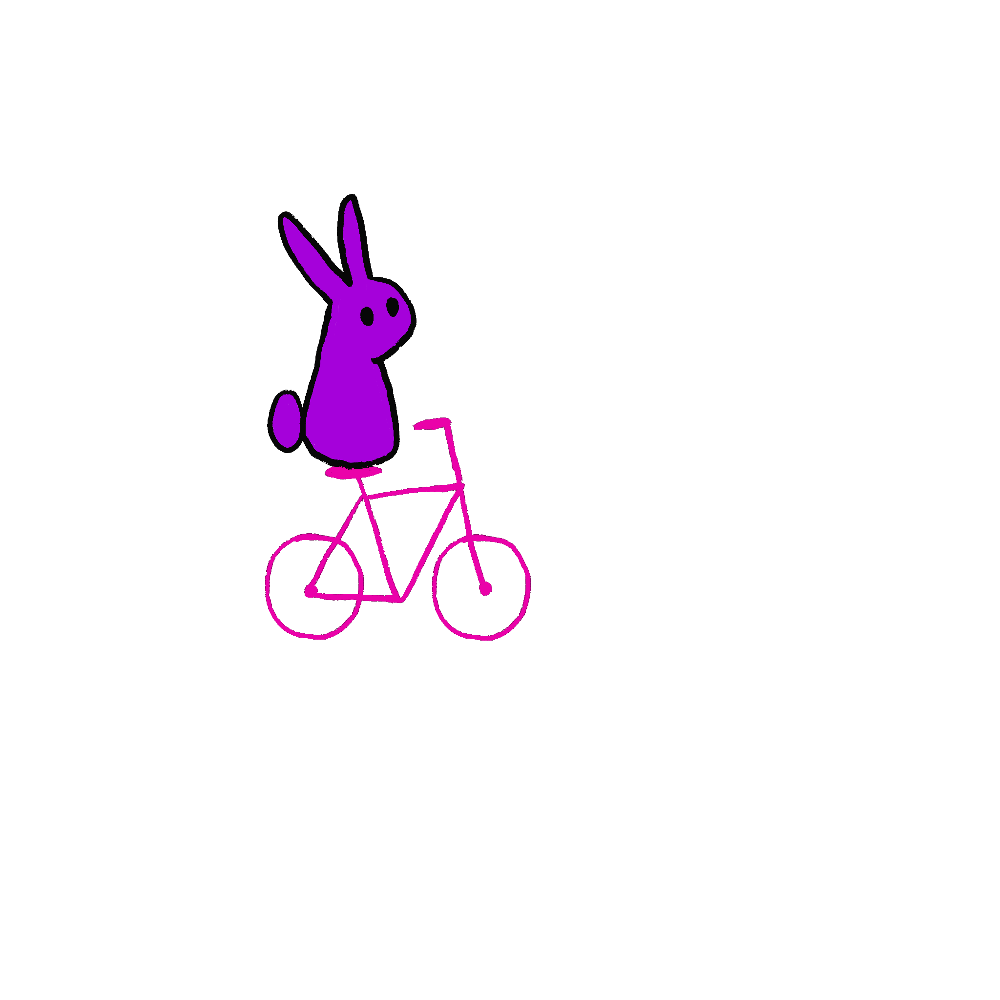
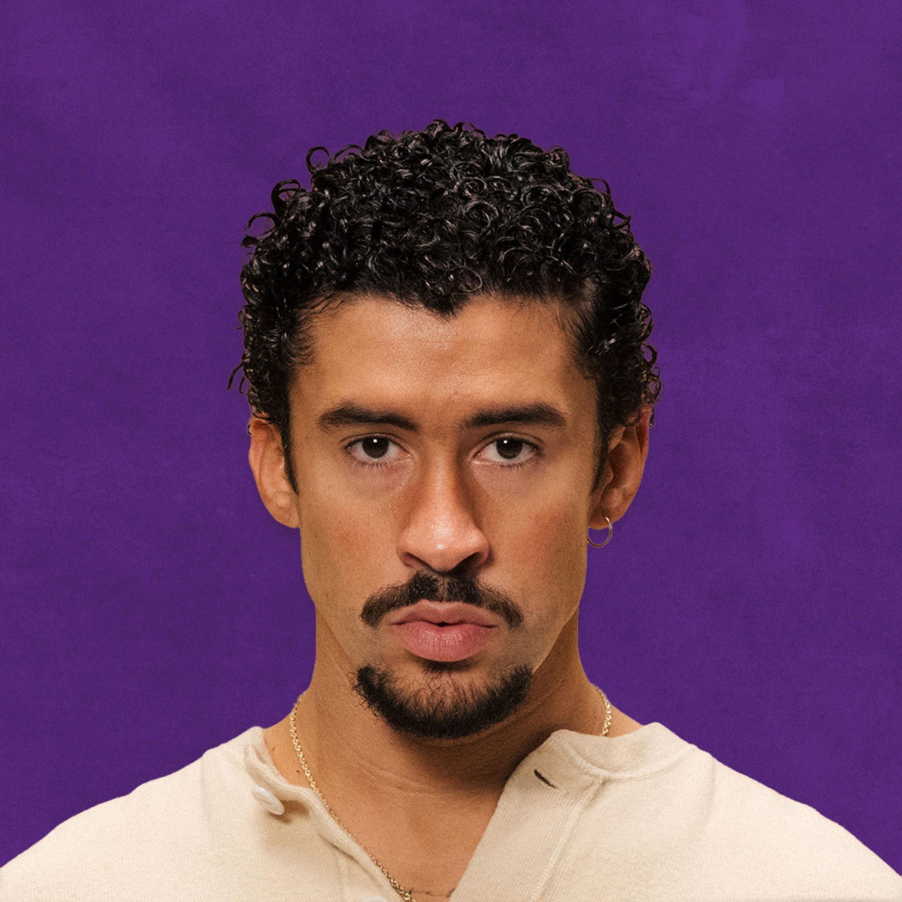

Ik heb gekozen voor dit onderwerp, omdat ik een passie heb voor konijnen. Ik ben al heel mijn leven vegetarier, dus dat ik zeker goed bewijs dat ik van dieren hou! Ik heb natuurlijk niet hetzelfde dieet als een konijn al vind ik een wortel af toe wel lekker. Zelf heb ik nooit konijnen gehad, maar soms streef je naar wat je niet kunt hebben. Het lijkt mij namelijk een beetje zielig om konijnen te houden in een Amsterdams appartement.
Maar ja, het gras is altijd groener aan de andere kant. Ik wil natuurlijk ook geen doorgeknagen kabels en huiswerk met knabbels en al.


Bad Bunny
Ik luister veel Spaanstalige muziek en een van mijn favoriete Spaanstalige artiesten is Bad Bunny. Een grappig ding wat mij laatst opviel is dat ik op Instagram een onderwerp kon kiezen, waar het algoritme mij dan meer posts over zou laten zien. Ik hou van konijnen, dus ik kies "Bunny". Vervolgens zie ik dat mijn Instagram Explore Page gevuld is met konijnen en... Bad Bunny!